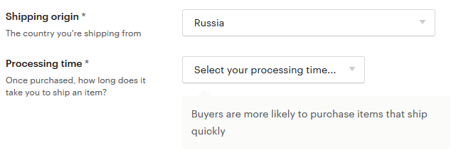
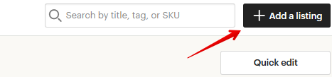
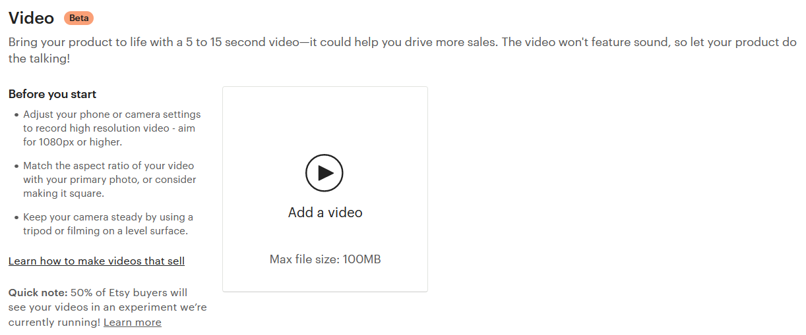
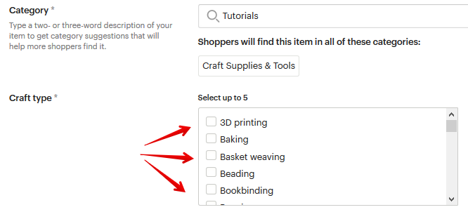
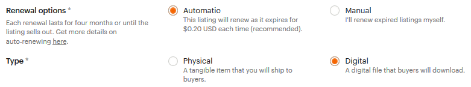
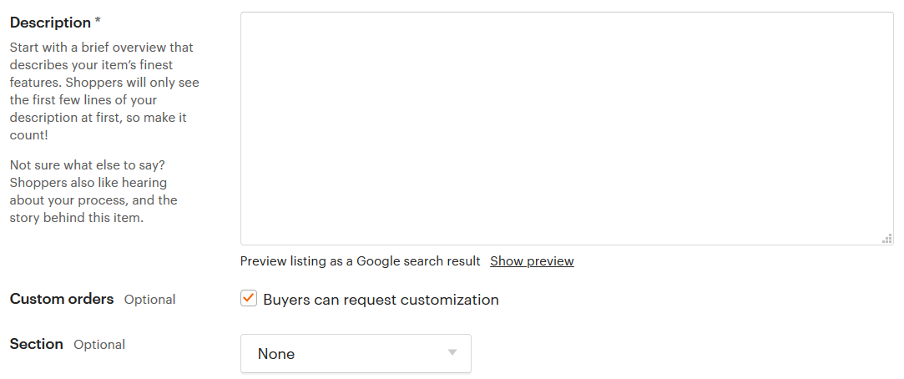

Далее нужно выбрать вариацию, для которой вы хотите привязать фотографии.
И для любого из пунктов (или для всех) укажите фотографию, которая ему со-
ответствует.
Следующий пункт добавления товара – персонализация (Personalization).
Если вы можете нанести на свои товары какую-то уникальную информацию по-
купателя (дату рождения, имя, инициалы, памятную фразу и т.п.) – можно вклю-
чить этот пункт в настройках.
В этом случае также нужно указать:


• Instructions for buyers – инструкция для покупателей, что писать в поле
персонализации при заказе товара
• Personalization is optional – если отмечено, то поле персонализации поку-
пателю заполнять не обязательно
• Character limit – максимально количество символов, которое может вве-
сти покупатель
В вашем магазине покупатель увидит это следующим образом:
Далее необходимо разобраться со стоимостью доставки. Её нужно выставить
заранее для каждого товара.
• Shipping origin – страна, из которой вы отправляете товар
• Processing time – в течение скольких дней/недель вы отправите товар по-
сле получения заказа (т.е. это не срок доставки товара, а именно срок
подготовки товара к отправке).

• Fixed shipping prices: стоимость отправки внутри своей страны и в другие
страны.
Цену пересылки можно уточнить, например, на сайтах почтовых служб вашей
страны. Для примера, сайты Почты России и УкрПочты.
Для каждой страны можно указать свою стоимость отправления.
У Почты России, например, единая цена на мелкие пакеты для всех стран. По-
этому, чтобы не перечислять каждую страну по отдельности, можно выбрать ва-
риант Everywhere Else и указать единую цену на отправку во все страны (кроме
тех, что указаны отдельно).
Здесь нужно указать:
• служба доставки (Shipping carier) - по умолчанию оставьте вариант Other
• время доставки (Delivery time) - можно указать, если вы знаете, сколько
примерно может занять доставка (но не обязательно)
• стоимость доставки (What you'll charge)
В параметре What you'll charge по умолчанию стоит вариант Free shipping (бес-
платная доставка). Если вы хотите, чтобы за доставку покупатель платил допол-
нительно, то выберите пункт Fixed price.


Когда вы будете указывать стоимость доставки, то здесь есть 2 колонки:
• цена отправки при заказе только этого товара (One item)
• цена доставки, если товар заказали вместе с другим или их заказали не-
сколько штук (Additional item)
Если у вас включена реклама Etsy Ads, то на последнем шаге настроек в пункте
Marketing вы можете выбрать, отправить ли новый листинг в рекламу. По умол-
чанию выбран пункт Yes, advertise this listing (да, рекламировать этот листинг).
Если выбрать Maybe later, то листинг в рекламу не добавится.
После того, как вы выбрали все параметры, можете размещать листинг в мага-
зине. Для этого нажмите кнопку Publish.
Также можно сохранить листинг как черновик (Save as draft), если вы пока не
заполнили все поля (за это деньги не берутся) или с помощью кнопки предпро-
смотра оценить, как его увидят покупатели (Preview).
Как добавить листинг с цифровым товаром
Шаг 1 – открыть страницу Shop Manager – Listings – Add a listing.



Шаг 2 – добавить фотографии и информацию о товаре
• Photos: вы можете добавить от 1 до 10 фотографий. И лучше использовать
этот раздел по максимуму. Постарайтесь, чтобы они ответили на все воз-
можные вопросы клиента. Etsy советуют загружать фотографии не
меньше 2000 пикселей по ширине. Но лучше, если они будут больше –
чтобы покупатели смогли в подробностях разглядеть ваш товар. Если раз-
мер фотографий большой, то Этси автоматически ужимает их до 3000
пикселей. Фотографии должны быть в формате JPG, PNG или GIF.

• Video: видео листинга. Отличная возможно показать свой товар “вживую”.
Вы можете загрузить видео длиной от 5 до 15 секунд, оно будет без звука.
Желательно, чтобы формат был таким же, как у заглавной фотографии –
если первое фото горизонтальное, то и видео лучше снять горизонтально.
Максимальный размер загружаемого файла – 100 Mb.
• Title: заголовок листинга. Это один и важнейших элементов карточки то-
вара, наряду с тэгами (о которых речь пойдёт ниже). От текста в заголовке
зависит то, будут ли находить вас через поиск Etsy и Google или нет. В
title нужно указать основные характеристики товара. Какие слова и фразы
люди вводят в поиске, чтобы найти такие же товары, как и ваш. Макси-
мальная длина заголовка – 140 символов с пробелами.
• About this listing: здесь есть 3 параметра
o Who made it? (кто это создал). Возможные варианты: я (I did), со-
трудник магазина (a member of my shop), другая компания или че-
ловек (another company or person).
o What is it? (что это). Готовый товар (a finished product) или инстру-
менты/материалы для создания (a supply or tool to make things).
o When was it made? (когда это сделано). Здесь можно выбрать Made
to order, то есть товар ещё не готов, а показан образец, который
можно сделать, если покупатель попросит об этом. Остальные
варианты – это примерный год изготовления вашего товара.


• Category: нужно указать, к какой категории товаров можно отнести ваше
изделие. Например, товары для свадьбы (wedding), книги (books, movies
& music), товары для рукоделия (craft supplies & tools) или другое.
Хотя для цифровых товаров этот выбор не всегда очевиден, но всё же
постарайтесь указать категорию как можно точнее – от этого в том числе
зависит найдут ли вас покупатели через поиск на Этси. Основная катего-
рия, которую выбирают большинство продавцов и советуют Etsy – Craft
supplies & tools.
Указать категорию можно двумя способами. Первый – ввести слово, ко-
торое характеризует товар, и выбрать из вариантов Etsy.
Второй способ – найти нужную категорию вручную. Для этого нажмите
ссылку You can also add them manually.



После этого укажите главную категорию и подкатегории товара.
После выбора категории вам могут предложить указать до 5 типов ваших изде-
лий – например, для какой тематики он предназначен.
Часть атрибутов общие для всех категорий товаров, а часть появляется только
при выборе определенного типа изделия.
Первые 4 атрибута одинаковы для всех категорий.
• Primary color: основной цвет изделия (выбирайте тот, который ближе всего
вам подходит)


• Secondary color: второстепенный цвет изделия (если есть)
• Occasion: для какого события (например, годовщина или день рождения)
• Holiday: для какого официального праздника (например, Рождество или
Дня независимости)
• Style: стиль товара
У вас также могут быть другие атрибуты, в зависимости от выбранных подкате-
горий. Например:
Все атрибуты опциональны – их можно указывать, а можно и нет. Но лучше
указать то, что знаете.
• Renewal options: параметры обновления листинга. Добавленный товар
размещается на Этси в течение 4 месяцев. После этого (если его не купят)
он попадает в раздел неактивных. Вы можете снова выставить его на про-
дажу вручную (для этого выберите Manual) или автоматически (Automatic).
Обновление листинга стоит 20 центов.
• Type: тип товара. В нашем случае – цифровой (Digital).


• Description: описание товара. Далеко не все покупатели читают этот текст.
Но всё же стоит его заполнить максимально полезными сведениями,
например, размеры, типы файлов, количество страниц и т.п. Можно ука-
зать основные правила работы магазина.
• Custom orders: поставьте здесь галочку, если хотите, чтобы покупатели
могли написать вам сообщение и попросить сделать точно такой же товар,
но с какими-то изменениями (например, в другом цвете). Чтобы эта
настройка появилась, нужно включить данную возможность в параметрах
магазина Shop Manager – Settings – Options – Enabled Request Custom Order.
• Section: укажите, в какой раздел/секцию вашего магазина поместить но-
вый товар. Если они у вас ещё не созданы, то выберите пункт Add a section.
• Tags: еще один параметр (наряду с заголовком и атрибутами), который
крайне важен для того, чтобы вас находили в поиске Etsy. Желательно,
чтобы тэги повторяли поисковые запросы людей и то, что у вас написано
в заголовке. Можно добавить 13 тэгов, каждый из которых может быть
длиной не более 20 символов с пробелами.
• Materials: материалы, из которых сделан ваш товар. Можно написать до